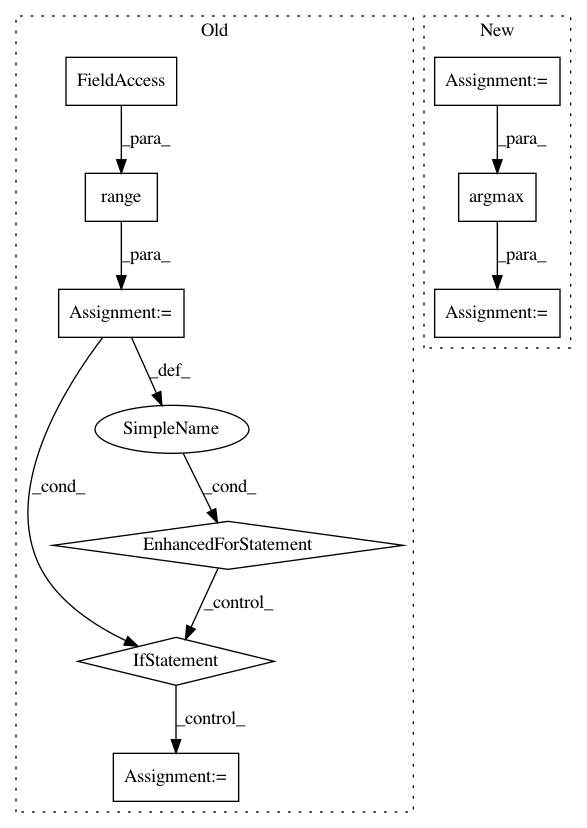

1002cfbcc9f8182404fb058f959d625de2eabbfc,deslib/dcs/rank.py,Rank,estimate_competence,#Rank#,87
Before Change
dists, idx_neighbors = self._get_region_competence(query)
competences = np.zeros(self.n_classifiers)
for clf_index in range(self.n_classifiers):
// Check if the dynamic frienemy pruning (DFP) should be used used
if self.DFP_mask[clf_index]:
// count the number of correctly classified samples in the
// neighborhood.
for counter, index in enumerate(idx_neighbors):
if self.processed_dsel[index][clf_index]:
continue
else:
competences[clf_index] = counter
break
return competences
After Change
// add an row with zero for the case where the base classifier correctly classifies the whole neighborhood.
// That way the search will always find a zero after comparing to self.K + 1
addition = np.zeros((shape[0], shape[2]))
results_neighbors = np.insert(results_neighbors, shape[1], addition, axis=1)
competences = np.argmax(results_neighbors == 0, axis=1)
// competences = np.zeros(self.n_classifiers)
//
// for clf_index in range(self.n_classifiers):
In pattern: SUPERPATTERN
Frequency: 3
Non-data size: 9
Instances
Project Name: scikit-learn-contrib/DESlib
Commit Name: 1002cfbcc9f8182404fb058f959d625de2eabbfc
Time: 2018-03-22
Author: rafaelmenelau@gmail.com
File Name: deslib/dcs/rank.py
Class Name: Rank
Method Name: estimate_competence
Project Name: tensorflow/hub
Commit Name: 20f388cfe01635a2073723c5c4ffd6dd7a87fbb2
Time: 2019-11-15
Author: cedric.renggli@gmail.com
File Name: tensorflow_hub/tools/module_search/utils.py
Class Name:
Method Name: knn_errorrate_loo
Project Name: tensorflow/hub
Commit Name: 20f388cfe01635a2073723c5c4ffd6dd7a87fbb2
Time: 2019-11-15
Author: cedric.renggli@gmail.com
File Name: tensorflow_hub/tools/module_search/utils.py
Class Name:
Method Name: knn_errorrate